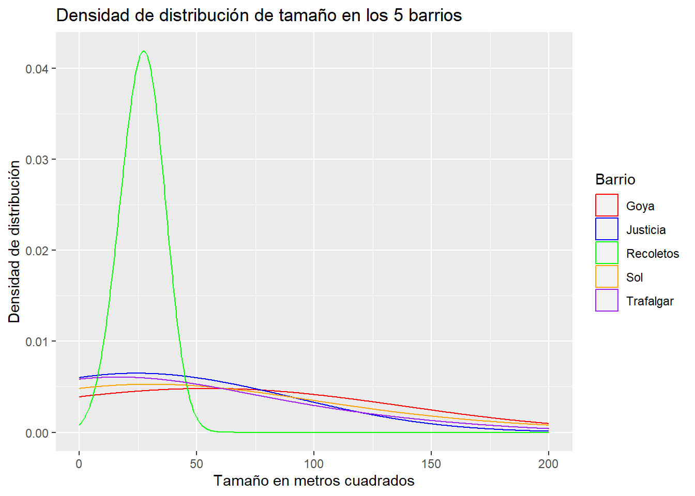

library(ggplot2)Cargar los datos en un dataframe llamado: airbnb
airbnb<-read.csv('data//airbnb.csv',sep = ',', stringsAsFactors = T)Mostrar las primeras 6 filas del dataframe
head(airbnb, 6) Zipcode Neighbourhood.Cleansed Property.Type Room.Type Accommodates
1 28004 Universidad Apartment Private room 2
2 28004 Universidad Apartment Entire home/apt 6
3 28004 Universidad Apartment Entire home/apt 3
4 28004 Universidad Loft Entire home/apt 3
5 28015 Universidad Apartment Entire home/apt 5
6 28004 Universidad Apartment Entire home/apt 2
Bathrooms Bedrooms Beds Bed.Type
1 2 1 1 Real Bed
2 1 3 5 Real Bed
3 1 2 2 Real Bed
4 2 1 1 Real Bed
5 1 1 1 Real Bed
6 1 0 1 Real Bed
Amenities
1 TV,Wireless Internet,Kitchen,Pets allowed,Pets live on this property,Buzzer/wireless intercom,Heating,Suitable for events,Washer,First aid kit,Essentials,Lock on bedroom door,Iron
2 TV,Internet,Wireless Internet,Air conditioning,Kitchen,Indoor fireplace,Heating,Family/kid friendly,Washer,Dryer,Smoke detector,Carbon monoxide detector,Essentials,Shampoo
3 TV,Internet,Wireless Internet,Air conditioning,Kitchen,Doorman,Heating,Family/kid friendly,Washer,Essentials,Shampoo,Hangers,Hair dryer,Iron,Laptop friendly workspace
4 TV,Internet,Wireless Internet,Air conditioning,Kitchen,Pets allowed,Breakfast,Elevator in building,Indoor fireplace,Buzzer/wireless intercom,Heating,Washer,Essentials,Shampoo,Hangers,Hair dryer,Iron,Laptop friendly workspace,translation missing: en.hosting_amenity_49,translation missing: en.hosting_amenity_50
5 TV,Wireless Internet,Air conditioning,Kitchen,Smoking allowed,Pets allowed,Elevator in building,Heating,Family/kid friendly,Washer,Essentials,Iron
6 TV,Cable TV,Internet,Wireless Internet,Air conditioning,Wheelchair accessible,Kitchen,Doorman,Elevator in building,Buzzer/wireless intercom,Heating,Washer,Smoke detector,Carbon monoxide detector,First aid kit,Safety card,Fire extinguisher,Essentials,Shampoo,24-hour check-in,Hangers,Hair dryer,Iron,Laptop friendly workspace,Self Check-In,Doorman Entry
Square.Feet Price Review.Scores.Rating
1 NA 35 NA
2 NA 92 96
3 NA 55 91
4 NA 60 100
5 538 75 90
6 NA 55 95Renombrar las columnas de la siguiente forma:
| Nombre original | Nuevo nombre |
|---|---|
| Zipcode | CodigoPostal |
| Neighbourhood.Cleansed | Barrio |
| Property.Type | TipoPropiedad |
| Room.Type | TipoAlquiler |
| Accommodates | MaxOcupantes |
| Bathrooms | NumBanyos |
| Bedrooms | NumDormitorios |
| Beds | NumCamas |
| Bed.Type | TipoCama |
| Amenities | Comodidades |
| Square.Feet | PiesCuadrados |
| Price | Precio |
| Review.Scores.Rating | Puntuacion |
newnames<-c("CodigoPostal","Barrio","TipoPropiedad","TipoAlquiler","MaxOcupantes","NumBanyos",
"NumDormitorios","NumCamas","TipoCama","Comodidades","PiesCuadrados","Precio","Puntuacion")
# Renombrar columnas utilzando newnames
colnames(airbnb) <- newnames
colnames(airbnb) [1] "CodigoPostal" "Barrio" "TipoPropiedad" "TipoAlquiler"
[5] "MaxOcupantes" "NumBanyos" "NumDormitorios" "NumCamas"
[9] "TipoCama" "Comodidades" "PiesCuadrados" "Precio"
[13] "Puntuacion" Crea una nueva columna llamada MetrosCuadrados a partir de la columna PiesCuadrados.
Ayuda: 1 pie cuadrado son 0,092903 metros cuadrdados
# Comprobar si la columna MetrosCuadrados ya existe
if (!"MetrosCuadrados" %in% colnames(airbnb)) {
# Si no existe, crearla
airbnb$MetrosCuadrados <- airbnb$PiesCuadrados * 0.092903
}
head(airbnb) CodigoPostal Barrio TipoPropiedad TipoAlquiler MaxOcupantes NumBanyos
1 28004 Universidad Apartment Private room 2 2
2 28004 Universidad Apartment Entire home/apt 6 1
3 28004 Universidad Apartment Entire home/apt 3 1
4 28004 Universidad Loft Entire home/apt 3 2
5 28015 Universidad Apartment Entire home/apt 5 1
6 28004 Universidad Apartment Entire home/apt 2 1
NumDormitorios NumCamas TipoCama
1 1 1 Real Bed
2 3 5 Real Bed
3 2 2 Real Bed
4 1 1 Real Bed
5 1 1 Real Bed
6 0 1 Real Bed
Comodidades
1 TV,Wireless Internet,Kitchen,Pets allowed,Pets live on this property,Buzzer/wireless intercom,Heating,Suitable for events,Washer,First aid kit,Essentials,Lock on bedroom door,Iron
2 TV,Internet,Wireless Internet,Air conditioning,Kitchen,Indoor fireplace,Heating,Family/kid friendly,Washer,Dryer,Smoke detector,Carbon monoxide detector,Essentials,Shampoo
3 TV,Internet,Wireless Internet,Air conditioning,Kitchen,Doorman,Heating,Family/kid friendly,Washer,Essentials,Shampoo,Hangers,Hair dryer,Iron,Laptop friendly workspace
4 TV,Internet,Wireless Internet,Air conditioning,Kitchen,Pets allowed,Breakfast,Elevator in building,Indoor fireplace,Buzzer/wireless intercom,Heating,Washer,Essentials,Shampoo,Hangers,Hair dryer,Iron,Laptop friendly workspace,translation missing: en.hosting_amenity_49,translation missing: en.hosting_amenity_50
5 TV,Wireless Internet,Air conditioning,Kitchen,Smoking allowed,Pets allowed,Elevator in building,Heating,Family/kid friendly,Washer,Essentials,Iron
6 TV,Cable TV,Internet,Wireless Internet,Air conditioning,Wheelchair accessible,Kitchen,Doorman,Elevator in building,Buzzer/wireless intercom,Heating,Washer,Smoke detector,Carbon monoxide detector,First aid kit,Safety card,Fire extinguisher,Essentials,Shampoo,24-hour check-in,Hangers,Hair dryer,Iron,Laptop friendly workspace,Self Check-In,Doorman Entry
PiesCuadrados Precio Puntuacion MetrosCuadrados
1 NA 35 NA NA
2 NA 92 96 NA
3 NA 55 91 NA
4 NA 60 100 NA
5 538 75 90 49.98181
6 NA 55 95 NAMiremos el código postal. Es una variable con entradas erroneas. Hay valores como ’‘,’-’ y ‘28’ que deberían ser considerados como NA. Así mismo también debería ser NA todos los que no compiencen por 28, ya que estamos con códigos postales de Madrid
El código postal 28002, 28004 y 28051 tienen entradas repetidas. Por ejemplo las entradas 28002 deberían ir dnetro de 28002
El codigo 2804 debería ser 28004, 2805 deberia ser 28005 y 2815 juncto con 2815 debería ser 28015
Limpia los datos de la columna Codigo Postal
library(dplyr)
Attaching package: 'dplyr'The following objects are masked from 'package:stats':
filter, lagThe following objects are masked from 'package:base':
intersect, setdiff, setequal, union# Comprobar cuantas datos tiene el dataset
print(paste0("airbnb tiene ",count(airbnb), " filas"))[1] "airbnb tiene 13207 filas"# Devuelve una lista de los códigos postales únicos en la columna CodigoPostal del dataframe airbnb
table(airbnb$CodigoPostal)
- 20013 20126 2015 25008
439 1 1 1 1 1
27004 27013 28 28001 280013 28002
1 1 1 231 1 170
28002\n28002 28003 28004 28005 28006 28007
1 185 1794 1194 218 206
28008 28009 28010 28011 28012 28013
338 216 384 250 2060 1019
28014 28015 28016 28017 28018 28019
630 600 76 107 43 200
28020 28021 28022 28023 28024 28025
192 58 30 23 44 123
28026 28027 28028 28029 28030 28031
93 122 263 110 73 27
28032 28033 28034 28035 28036 28037
33 89 45 59 67 65
28038 28039 2804 28040 28041 28042
77 160 1 16 63 90
28043 28044 28045 28046 28047 28048
103 19 495 32 67 1
28049 2805 28050 28051 28051\n28051 28052
3 1 58 16 1 1
28053 28054 28055 28056 28058 28060
85 12 12 1 1 1
28094 28105 2815 28850 Madrid 28004
1 1 1 1 1 # Asignar NA a las filas del dataframe que tengan un código postal vacío (''), un guión ('-'), un valor igual a 28 o un valor que no empiece por 28
airbnb$CodigoPostal[(airbnb$CodigoPostal=='' )
| (airbnb$CodigoPostal=='-')
| (airbnb$CodigoPostal=='28')
| (substring(airbnb$CodigoPostal,1,2)!='28')] <- NA
# Eliminar las filas con valores NA
airbnb <- filter(airbnb, !is.na(airbnb$CodigoPostal))
# Renombrar los valores de la columna CodigoPostal de forma correcta y borrar los erroneos de la columna
airbnb$CodigoPostal[airbnb$CodigoPostal=='28002\n28002'] <- '28002'
airbnb$CodigoPostal[airbnb$CodigoPostal=='Madrid 28004'] <- '28004'
airbnb$CodigoPostal[airbnb$CodigoPostal=='28051\n28051'] <- '28051'
airbnb$CodigoPostal[airbnb$CodigoPostal=='2804'] <- '28004'
airbnb$CodigoPostal[airbnb$CodigoPostal=='2805'] <- '28005'
airbnb$CodigoPostal[airbnb$CodigoPostal=='280013'] <- '28013'
airbnb$CodigoPostal[airbnb$CodigoPostal=='2815'] <- '28015'
airbnb$CodigoPostal <- droplevels(airbnb$CodigoPostal)
# Comprobar cuantos datos se han eliminado
print(paste0("airbnb filtrado tiene ", count(airbnb), " filas"))[1] "airbnb filtrado tiene 12759 filas"Una vez limpios los datos ¿Cuales son los códigos postales que tenemos?
table(airbnb$CodigoPostal)
28001 28002 28003 28004 28005 28006 28007 28008 28009 28010 28011 28012 28013
231 171 185 1795 1195 218 206 338 216 384 250 2060 1020
28014 28015 28016 28017 28018 28019 28020 28021 28022 28023 28024 28025 28026
630 601 76 107 43 200 192 58 30 23 44 123 93
28027 28028 28029 28030 28031 28032 28033 28034 28035 28036 28037 28038 28039
122 263 110 73 27 33 89 45 59 67 65 77 160
28040 28041 28042 28043 28044 28045 28046 28047 28048 28049 28050 28051 28052
16 63 90 103 19 495 32 67 1 3 58 17 1
28053 28054 28055 28056 28058 28060 28094 28105 28850
85 12 12 1 1 1 1 1 1 ¿Cuales son los 5 códigos postales con más entradas? ¿Y con menos? ¿Cuantas entradas tienen?
# Los 5 códigos postales con más entradas y numero de entradas
head(sort(table(airbnb$CodigoPostal), decreasing = TRUE), 5)
28012 28004 28005 28013 28014
2060 1795 1195 1020 630 # Los 5 códigos postales con menos entradas y numero de entradas
head(sort(table(airbnb$CodigoPostal), decreasing = FALSE), 5)
28048 28052 28056 28058 28060
1 1 1 1 1 ¿Cuales son los barrios que hay en el código postal 28012?
# Todos los datos que sean distintos en Barrio, filtrados por el CP = 28012
distinct(filter(airbnb, airbnb$CodigoPostal == "28012"), Barrio) Barrio
1 Sol
2 Acacias
3 Palos de Moguer
4 Embajadores
5 Cortes
6 Palacio
7 Universidad
8 Delicias
9 Arapiles
10 Atocha
11 Goya¿Cuantas entradas hay en cada uno de esos barrios para el codigo postal 28012?
airbnb |> filter(CodigoPostal == '28012') |> count(Barrio) Barrio n
1 Acacias 13
2 Arapiles 1
3 Atocha 1
4 Cortes 216
5 Delicias 1
6 Embajadores 1449
7 Goya 1
8 Palacio 27
9 Palos de Moguer 46
10 Sol 301
11 Universidad 4¿Cuantos barrios hay en todo el dataset airbnb? ¿Cuales son?
# Numero de barrios que hay
table(airbnb$Barrio)
Abrantes Acacias
18 139
Adelfas Aeropuerto
49 5
Aguilas Alameda de Osuna
13 24
Almagro Almenara
143 57
Almendrales Aluche
44 42
Ambroz Amposta
12 5
Apostol Santiago Arapiles
14 181
Aravaca Arcos
16 16
Argüelles Atocha
254 16
Bellas Vistas Berruguete
78 63
Buenavista Butarque
21 6
Campamento Canillas
22 42
Canillejas Cármenes
7 30
Casa de Campo Casco Histórico de Barajas
75 28
Casco Histórico de Vallecas Casco Histórico de Vicálvaro
39 19
Castellana Castilla
88 23
Castillejos Chopera
79 109
Ciudad Jardín Ciudad Universitaria
54 34
Colina Comillas
16 59
Concepción Corralejos
44 5
Cortes Costillares
741 31
Cuatro Caminos Cuatro Vientos
111 3
Delicias El Goloso
123 3
El Plantío El Viso
3 43
Embajadores Entrevías
1800 11
Estrella Fontarrón
25 24
Fuente del Berro Fuentelareina
64 3
Gaztambide Goya
137 215
Guindalera Hellín
184 5
Hispanoamérica Ibiza
69 94
Imperial Jerónimos
87 83
Justicia La Paz
764 12
Legazpi Lista
37 111
Los Angeles Los Rosales
16 28
Lucero Marroquina
60 12
Media Legua Mirasierra
17 14
Moscardó Niño Jesús
30 21
Nueva España Numancia
58 56
Opañel Orcasitas
55 2
Orcasur Pacífico
8 133
Palacio Palomas
1055 12
Palomeras Bajas Palomeras Sureste
30 15
Palos de Moguer Pavones
251 4
Peñagrande Pilar
37 26
Pinar del Rey Piovera
47 11
Portazgo Pradolongo
17 13
Prosperidad Pueblo Nuevo
95 40
Puerta Bonita Puerta del Angel
37 195
Quintana Recoletos
44 160
Rejas Rios Rosas
20 98
Rosas Salvador
4 12
San Andrés San Cristobal
20 8
San Diego San Fermín
76 32
San Isidro San Juan Bautista
83 25
San Pascual Santa Eugenia
16 4
Simancas Sol
43 908
Timón Trafalgar
16 303
Universidad Valdeacederas
1326 45
Valdefuentes Valdemarín
55 4
Valdezarza Vallehermoso
20 58
Valverde Ventas
44 74
Vinateros Vista Alegre
16 69
Zofío
9 ¿Cuales son los 5 barrios que tienen mayor número entradas?
head(sort(table(airbnb$Barrio),decreasing = TRUE),5)
Embajadores Universidad Palacio Sol Justicia
1800 1326 1055 908 764 ¿Cuantos Tipos de Alquiler diferentes hay? ¿Cuales son? ¿Cuantas entradas en el dataframe hay por cada tipo?
# Cuantos Tipos de Alquiler diferentes hay
count(distinct(airbnb,TipoAlquiler)) n
1 3# Cuales son
distinct(airbnb,TipoAlquiler) TipoAlquiler
1 Private room
2 Entire home/apt
3 Shared room# Cuantos hay
summary(airbnb$TipoAlquiler )Entire home/apt Private room Shared room
7682 4897 180 Muestra el diagrama de cajas del precio para cada uno de los diferentes Tipos de Alquiler
ggplot(data=airbnb,aes(x=TipoAlquiler, y=Precio, color=TipoAlquiler )) + geom_boxplot() Warning: Removed 8 rows containing non-finite values (`stat_boxplot()`).summary(airbnb$Precio) Min. 1st Qu. Median Mean 3rd Qu. Max. NA's
9.00 31.00 53.00 65.97 80.00 875.00 8 # Hay 8 NAsCual es el precio medio de alquiler de cada uno, la diferencia que hay ¿es estadísticamente significativa? ¿Con que test lo comprobarías?
# Quitar todos los na
precios_sin_Na <- filter(airbnb, !is.na(airbnb$Precio))
# Calcular precio medio
Entire_home_promedio <- mean(precios_sin_Na$Precio[precios_sin_Na$TipoAlquiler=='Entire home/apt'])
Private_room_promedio <- mean(precios_sin_Na$Precio[precios_sin_Na$TipoAlquiler=='Private room'])
Shared_room_promedio <- mean(precios_sin_Na$Precio[precios_sin_Na$TipoAlquiler=='Shared room'])
# Mostrar resultado
print(paste0("La media en Entire home/apt es: ", round(Entire_home_promedio, 2)))[1] "La media en Entire home/apt es: 87.17"print(paste0("La media en Private room es: ", round(Private_room_promedio, 2)))[1] "La media en Private room es: 34.04"print(paste0("La media en Shared room es: ", round(Shared_room_promedio, 2)))[1] "La media en Shared room es: 30.18"print("Existe mucha diferencia entre Entire respecto a Private y Shared.")[1] "Existe mucha diferencia entre Entire respecto a Private y Shared."# Comprobar si existe distribucion gaussiana utilizando el test de Shapiro
shapiro.test(rnorm(100, mean=Entire_home_promedio, sd=4))
Shapiro-Wilk normality test
data: rnorm(100, mean = Entire_home_promedio, sd = 4)
W = 0.99438, p-value = 0.9557shapiro.test(rnorm(100, mean=Private_room_promedio, sd=4))
Shapiro-Wilk normality test
data: rnorm(100, mean = Private_room_promedio, sd = 4)
W = 0.99322, p-value = 0.901shapiro.test(rnorm(100, mean=Shared_room_promedio, sd=4))
Shapiro-Wilk normality test
data: rnorm(100, mean = Shared_room_promedio, sd = 4)
W = 0.99095, p-value = 0.7411El p-valor es mas grande de 0.05, luego NO son gaussianas así que hacemos Kruskal-Wallis
# He utilizado el test Kruskal
kruskal.test( Precio ~ TipoAlquiler, data=airbnb)
Kruskal-Wallis rank sum test
data: Precio by TipoAlquiler
Kruskal-Wallis chi-squared = 7003.3, df = 2, p-value < 2.2e-16El p-valor es muy pequeño por lo que descartamos la hipótesis nula y podemos decir que parece que hay diferencia de precio entre los tipos de alquiler.
En resumen, podemos concluir que los precios son estadisticamente significantes según el tipo de alquiler en Airbnb.
Filtra el dataframe cuyos tipo de alquiler sea ‘Entire home/apt’ y guardalo en un dataframe llamado airbnb_entire. Estas serán las entradas que tienen un alquiler del piso completo.
airbnb_entire <- filter(precios_sin_Na, precios_sin_Na$TipoAlquiler=='Entire home/apt')
head(airbnb_entire,2) CodigoPostal Barrio TipoPropiedad TipoAlquiler MaxOcupantes NumBanyos
1 28004 Universidad Apartment Entire home/apt 6 1
2 28004 Universidad Apartment Entire home/apt 3 1
NumDormitorios NumCamas TipoCama
1 3 5 Real Bed
2 2 2 Real Bed
Comodidades
1 TV,Internet,Wireless Internet,Air conditioning,Kitchen,Indoor fireplace,Heating,Family/kid friendly,Washer,Dryer,Smoke detector,Carbon monoxide detector,Essentials,Shampoo
2 TV,Internet,Wireless Internet,Air conditioning,Kitchen,Doorman,Heating,Family/kid friendly,Washer,Essentials,Shampoo,Hangers,Hair dryer,Iron,Laptop friendly workspace
PiesCuadrados Precio Puntuacion MetrosCuadrados
1 NA 92 96 NA
2 NA 55 91 NA¿Cuales son los 5 barrios que tienen un mayor número de apartamentos enteros en alquiler? Nota: Mirar solo en airbnb_entire. A partir de este punto y hasta que se diga lo contrario partiremos de airbnb_entire.
head(sort(table(airbnb_entire$Barrio), decreasing=TRUE),5)
Embajadores Universidad Palacio Sol Cortes
1204 960 754 688 568 ¿Cuales son los 5 barrios que tienen un mayor precio medio de alquiler para apartamentos enteros (es decir, del dataframe airbnb_entire)? ¿Cual es su precio medio?
barrios_precio_m <- aggregate(Precio ~ Barrio, FUN = mean, data = airbnb_entire, na.rm=TRUE) |> arrange(desc(Precio))
head(barrios_precio_m, 5) Barrio Precio
1 Palomas 309.7500
2 Fuentelareina 180.0000
3 Recoletos 158.8968
4 El Plantío 150.0000
5 Casco Histórico de Barajas 141.2500Ayuda: Usa la función aggregate aggregate(.~colname,df,mean,na.rm=TRUE)
¿Cuantos apartamentos hay en cada uno de esos barrios?
Mostrar una dataframe con el nombre del barrio, el precio y el número de entradas.
Ayuda: Podeis crear un nuevo dataframe con las columnas “Barrio” y “Freq” que contenga el número de entradas en cada barrio y hacer un merge con el dataframe del punto anterior.
# Contar número de apartamentos por barrio
apartamentos_por_barrio <- airbnb_entire |>group_by(Barrio) |>summarize(Freq = n())
# Merge con precios medios por barrio
barrios_precio_freq <- merge(barrios_precio_m, apartamentos_por_barrio, by = "Barrio")
# Ordenar por precio descendente
barrios_precio_freq <- barrios_precio_freq[order(barrios_precio_freq$Precio, decreasing = TRUE),]
# Mostrar dataframe con nombre de barrio, precio y frecuencia
head(barrios_precio_freq, 5) Barrio Precio Freq
77 Palomas 309.7500 4
50 Fuentelareina 180.0000 2
92 Recoletos 158.8968 126
43 El Plantío 150.0000 1
27 Casco Histórico de Barajas 141.2500 8Partiendo del dataframe anterior, muestra los 5 barrios con mayor precio, pero que tengan más de 100 entradas de alquiler.
barrios_frecuencia <- filter(barrios_precio_freq, barrios_precio_freq$Freq > 100)
head(barrios_frecuencia,5) Barrio Precio Freq
1 Recoletos 158.89683 126
2 Goya 109.98540 137
3 Sol 100.59593 688
4 Justicia 99.04624 519
5 Trafalgar 98.86977 215Dibuja el diagrama de densidad de distribución de los diferentes precios. Serían 5 gráficas, una por cada barrio.
# Grafica de densidades de precio en un solo ggplot
barrios = c('Recoletos', 'Goya', 'Sol', 'Justicia', 'Trafalgar')
top_barrios<-subset(airbnb_entire,Barrio %in% barrios)
ggplot(top_barrios,aes(x=Precio,color=Barrio))+geom_density(bw=10)Calcula el tamaño medio, en metros cuadrados, para los 5 barrios anteriores y muestralo en el mismo dataframe junto con el precio y número de entradas
barrios_medio <- aggregate(MetrosCuadrados ~ Barrio, FUN = mean, data = airbnb_entire, na.rm = TRUE)
barrios_medio <- merge(head(barrios_frecuencia,5), barrios_medio, by="Barrio")
barrios_medio Barrio Precio Freq MetrosCuadrados
1 Goya 109.98540 137 51.68504
2 Justicia 99.04624 519 28.52669
3 Recoletos 158.89683 126 26.66316
4 Sol 100.59593 688 44.35567
5 Trafalgar 98.86977 215 29.30426Dibuja el diagrama de densidad de distribución de los diferentes tamaños de apartamentos. Serían 5 gráficas, una por cada barrio.
for (bar in barrios){
df <- filter(airbnb_entire, airbnb_entire$Barrio==bar, !is.na(airbnb_entire$MetrosCuadrados) )
print(ggplot(data=df, aes(MetrosCuadrados)) +
geom_density(adjust = 3) + ylab(bar)
# Desactivando la ultima linea se puede apreciar que el barrio recoletos si coincide con la grafica con todos los barrios juntos al tener todos una escala igual en el eje x
+ scale_x_continuous(limits = c(0, 200))
)
}Warning: Removed 2 rows containing non-finite values (`stat_density()`).
# Todas las graficas en el mismpo eje
df <- filter(airbnb_entire, Barrio %in% barrios, !is.na(MetrosCuadrados))
ggplot(df, aes(x = MetrosCuadrados, color = Barrio)) +
geom_density(adjust = 3) +
scale_color_manual(values = c("red", "blue", "green", "orange", "purple")) +
labs(x = "Tamaño en metros cuadrados", y = "Densidad de distribución",
title = "Densidad de distribución de tamaño en los 5 barrios") 
Esta claro que las medias de metros cuadrados de cada uno de estos 5 barrios parecen ser diferentes, pero ¿son estadísticamente diferentes? ¿Que test habría que usar para comprobarlo
# Omitimos na y separamos por barrios
goya_m2 <- na.omit(airbnb_entire[airbnb_entire$Barrio == "Goya", "MetrosCuadrados"])
justicia_m2 <- na.omit(airbnb_entire[airbnb_entire$Barrio == "Justicia", "MetrosCuadrados"])
recoletos_m2 <- na.omit(airbnb_entire[airbnb_entire$Barrio == "Recoletos", "MetrosCuadrados"])
sol_m2 <- na.omit(airbnb_entire[airbnb_entire$Barrio == "Sol", "MetrosCuadrados"])
trafalgar_m2 <- na.omit(airbnb_entire[airbnb_entire$Barrio == "Trafalgar", "MetrosCuadrados"])
# El Test de Shapiro
shapiro.test(goya_m2)
Shapiro-Wilk normality test
data: goya_m2
W = 0.93813, p-value = 0.5199shapiro.test(justicia_m2)
Shapiro-Wilk normality test
data: justicia_m2
W = 0.76212, p-value = 0.0006419shapiro.test(recoletos_m2)
Shapiro-Wilk normality test
data: recoletos_m2
W = 0.75, p-value < 2.2e-16shapiro.test(sol_m2)
Shapiro-Wilk normality test
data: sol_m2
W = 0.8213, p-value = 5.67e-07shapiro.test(trafalgar_m2)
Shapiro-Wilk normality test
data: trafalgar_m2
W = 0.75023, p-value = 0.01276# Test kruskal
kruskal.test(MetrosCuadrados ~ Barrio, airbnb_entire)
Kruskal-Wallis rank sum test
data: MetrosCuadrados by Barrio
Kruskal-Wallis chi-squared = 77.78, df = 55, p-value = 0.02328En el test de shapiro, todos menos goya_m2 tienen un p-value menor a 0.05. Por lo tanto, no se puede utilizar un ANOVA para comparar las medias de las muestras.
En cambio, se puede utilizar el test de Kruskal-Wallis. Los resultados indican que tiene un (p-value = 0.02328). Es muy bajo que <0.05 así que tenemos que descartar la hipótesis nula y podemos decir que es estadisticamente significativa.
Para únicamente los pisos de alquiler en el barrio de Sol:
barrio_sol<-subset(airbnb_entire,Barrio=="Sol")
Calcular un modelo lineal que combine alguna de estas variables:
* NumBanyos
* NumDormitorios
* MaxOcupantes
* MetrosCuadrados
Primero calculamos la correlación para ver como se relacionan estas variables entre sí.
# Modelo lineal
barrio_sol <- subset(airbnb_entire,Barrio == "Sol")
lineal <- lm(data=barrio_sol, formula=NumBanyos~NumDormitorios)
summary(lineal)
Call:
lm(formula = NumBanyos ~ NumDormitorios, data = barrio_sol)
Residuals:
Min 1Q Median 3Q Max
-1.1886 -0.1111 -0.1111 0.2480 2.1706
Coefficients:
Estimate Std. Error t value Pr(>|t|)
(Intercept) 0.75199 0.02641 28.48 <2e-16 ***
NumDormitorios 0.35914 0.01499 23.96 <2e-16 ***
---
Signif. codes: 0 '***' 0.001 '**' 0.01 '*' 0.05 '.' 0.1 ' ' 1
Residual standard error: 0.3971 on 686 degrees of freedom
Multiple R-squared: 0.4555, Adjusted R-squared: 0.4547
F-statistic: 573.9 on 1 and 686 DF, p-value: < 2.2e-16# Correlacion
cor(barrio_sol[,c("NumBanyos","NumDormitorios","MaxOcupantes", "MetrosCuadrados")],
use = "pairwise.complete.obs") NumBanyos NumDormitorios MaxOcupantes MetrosCuadrados
NumBanyos 1.0000000 0.6749271 0.6551252 0.4525919
NumDormitorios 0.6749271 1.0000000 0.7594666 0.5549008
MaxOcupantes 0.6551252 0.7594666 1.0000000 0.4027592
MetrosCuadrados 0.4525919 0.5549008 0.4027592 1.0000000Se observa que la correlación entre el número de dormitorios y los metros cuadrados es sorprendentemente baja. ¿Son de fiar esos números?
No es asi, 0.5549008 esta en la zona media, tienen una correlacion moderada. No es alta pero tampoco baja. Aun no son muy fiables
Mediante un histograma o curvas de densidad podemos descartar números que no tienen sentido en el dataframe barrio_sol, para tener una matriz de correlación que tenga mayor sentido.
ggplot(barrio_sol,aes(x=MetrosCuadrados,y=NumDormitorios,color=MetrosCuadrados)) +
geom_col(size=4)Warning: Using `size` aesthetic for lines was deprecated in ggplot2 3.4.0.
ℹ Please use `linewidth` instead.Warning: Removed 629 rows containing missing values (`position_stack()`).# Eliminar los apartamentos menores de 25m2
barrio_sol_filtrado <- filter(barrio_sol, barrio_sol$MetrosCuadrados > 25,
barrio_sol$NumDormitorios > 0 )
# Volvwer a la correlación
cor(barrio_sol_filtrado[,c("NumBanyos", "NumDormitorios", "MaxOcupantes", "MetrosCuadrados")],
use = "pairwise.complete.obs") NumBanyos NumDormitorios MaxOcupantes MetrosCuadrados
NumBanyos 1.0000000 0.7220384 0.8482725 0.5695087
NumDormitorios 0.7220384 1.0000000 0.7687103 0.8098261
MaxOcupantes 0.8482725 0.7687103 1.0000000 0.6379055
MetrosCuadrados 0.5695087 0.8098261 0.6379055 1.0000000Una vez que hayamos filtrado los datos correspondientes calcular el valor o la combinación de valores que mejor nos permite obtener el precio de un inmueble.
modelo_metros <- lm(Precio ~ NumDormitorios + NumBanyos + MetrosCuadrados, data = barrio_sol_filtrado)
summary(modelo_metros)
Call:
lm(formula = Precio ~ NumDormitorios + NumBanyos + MetrosCuadrados,
data = barrio_sol_filtrado)
Residuals:
Min 1Q Median 3Q Max
-89.763 -12.606 -3.494 18.402 64.023
Coefficients:
Estimate Std. Error t value Pr(>|t|)
(Intercept) 21.7535 14.9708 1.453 0.15971
NumDormitorios 31.7181 9.7346 3.258 0.00346 **
NumBanyos 13.8450 11.7365 1.180 0.25020
MetrosCuadrados 0.1862 0.2238 0.832 0.41388
---
Signif. codes: 0 '***' 0.001 '**' 0.01 '*' 0.05 '.' 0.1 ' ' 1
Residual standard error: 31.08 on 23 degrees of freedom
Multiple R-squared: 0.7825, Adjusted R-squared: 0.7541
F-statistic: 27.58 on 3 and 23 DF, p-value: 8.498e-08¿Que variable es más fiable para conocer el precio de un inmueble, el número de habitaciones o los metros cuadrados?
Es más fiable el NumDormitorios porque su coeficiente es bastante mayor a MetrosCuadrados. NumDormitorios tiene un coeficiente de 31.7181, mientras MetrosCuadrados tiene 0.1862.
Responde con su correspondiente margen de error del 95%, ¿cuantos euros incrementa el precio del alquiler por cada metro cuadrado extra del piso?
confint(modelo_metros) 2.5 % 97.5 %
(Intercept) -9.2158903 52.722870
NumDormitorios 11.5804671 51.855646
NumBanyos -10.4338546 38.123937
MetrosCuadrados -0.2767345 0.649218Según el modelo obtenido, el incremento estimado en el precio del alquiler por cada metro cuadrado extra del piso es de 0.1862 euros.
Responde con su correspondiente margen de error del 95%, ¿cuantos euros incrementa el precio del alquiler por cada habitación?
confint(modelo_metros, "NumDormitorios") 2.5 % 97.5 %
NumDormitorios 11.58047 51.85565El precio aumenta 31.7181 euros por habitación extra.
¿Cual es la probabilidad de encontrar, en el barrio de Sol, un apartamento en alquiler con 3 dormitorios? ¿Cual es el intervalo de confianza de esa probabilidad?
# Contar el número de filas en la tabla barrio_sol,
total_apartamentos <- nrow(barrio_sol)
# Número total de apartamentos con 3 dormitorios.
apartamentos_3_dormitorios <- sum(barrio_sol$NumDormitorios == 3)
# Calcular la probabilidad estimada de encontrar un apartamento con 3 dormitorios
probabilidad_estimada <- apartamentos_3_dormitorios / total_apartamentos
# Mostrar resultado
print(paste("La probabilidad de encontrar un apartamento con 3 dormitorios en el barrio de Sol es de", round(probabilidad_estimada, 3)))[1] "La probabilidad de encontrar un apartamento con 3 dormitorios en el barrio de Sol es de 0.077"# Calcular el intervalo de confianza del 95% para la proporción de apartamentos con 3 dormitorios
intervalo_confianza <- binom.test(x = apartamentos_3_dormitorios, n = total_apartamentos, conf.level = 0.95)
# Mostrar resultado
print(paste("El intervalo de confianza del 95% para la probabilidad de encontrar un apartamento con 3 dormitorios esta entre", paste0(round(intervalo_confianza$conf.int[1], 3), " y el ", round(intervalo_confianza$conf.int[2], 3))))[1] "El intervalo de confianza del 95% para la probabilidad de encontrar un apartamento con 3 dormitorios esta entre 0.058 y el 0.1"